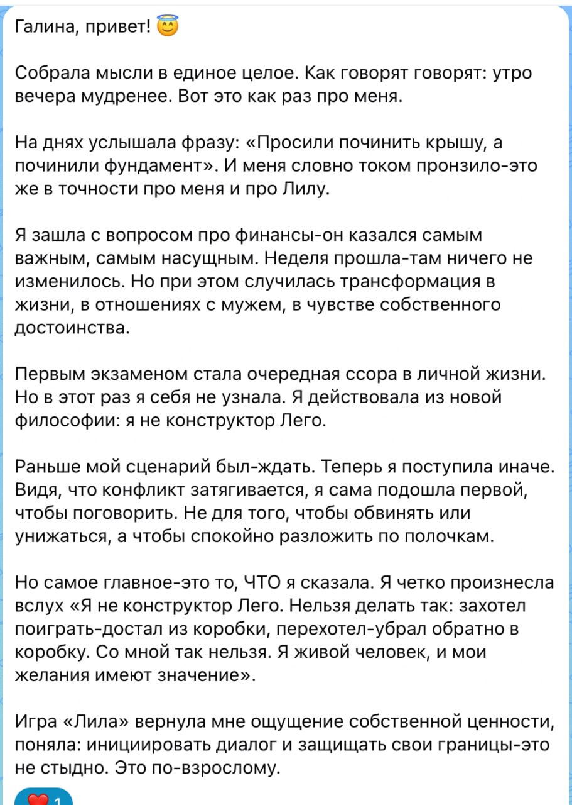
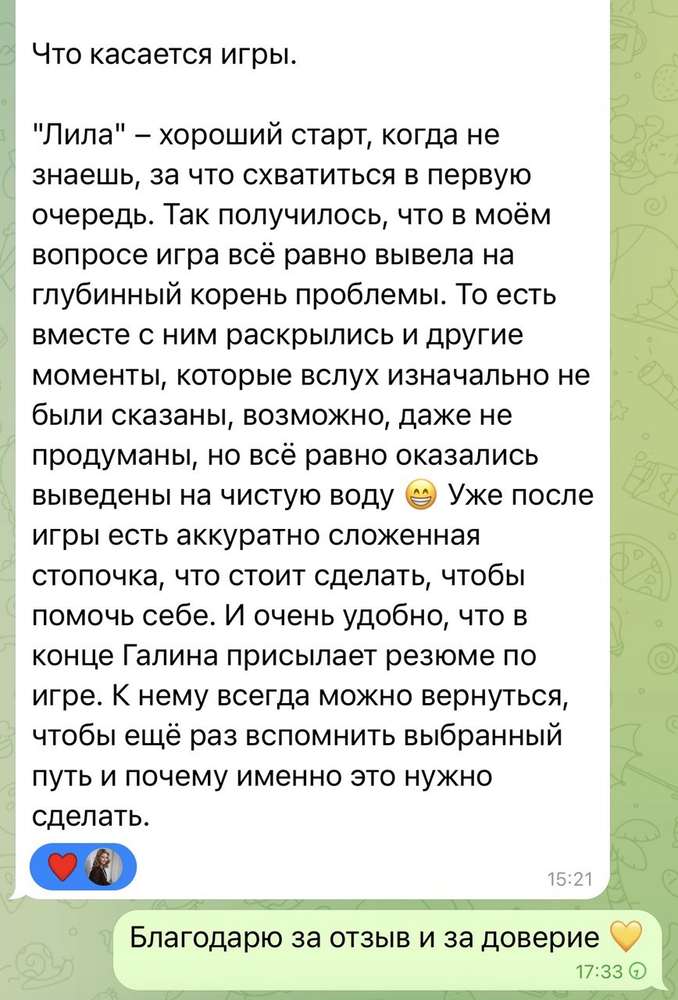
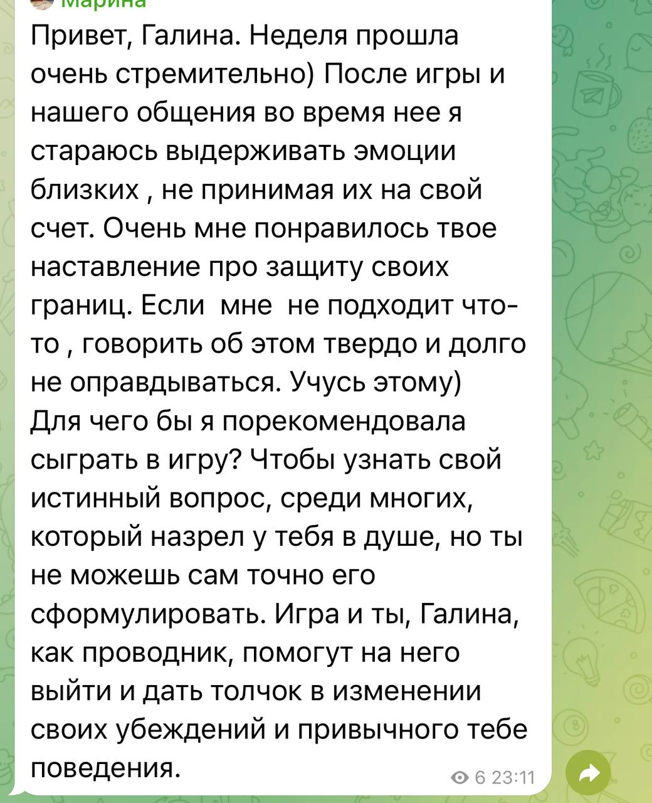

Лила
Если повторяются сценарии в отношениях, работе или самоощущении.
Психологическая игра-сессия

Галина Васильева
«Без эзотерики и обещаний чудес»
Лила
Если повторяются сценарии в отношениях, работе или самоощущении.
Игра про деньги
Если доход не растёт, деньги утекают или сложно брать больше.
Бесплатно: Галина задаст 3-4 уточняющих вопроса и подскажет, нужна ли вам игра вообще и какая. Записаться можно потом — ни к чему не обязывает.
Выберите вариант выше
Покажу предварительную рекомендацию. Окончательно подберём игру в боте по вашей ситуации.
«Хожу по кругу»
Повторяются одни и те же сценарии в отношениях, карьере, самореализации — и не ясно, почему.
Точка перелома
Развод, увольнение, выгорание. Нужна ясность и направление — не за 10 сессий, а сейчас.
Финансовый потолок
Знаний достаточно, но доход не растёт. Ищете причину во внутренних установках, а не в курсах.
Игра 1
Трансформационная игра «Лила» — формат психологической сессии, где вы работаете со своим конкретным запросом через игровое поле. Не для развлечения и не для предсказаний — а чтобы глубже увидеть свою ситуацию.
По ходу процесса становятся заметны внутренние убеждения, страхи, повторяющиеся сценарии. Это не разбор «задним числом» — вы видите, как формируется ваш привычный способ реагировать здесь и сейчас.
Не просто инсайт, а прожитый опыт изменений — с ясностью, что мешает двигаться дальше и какой следующий шаг можно сделать уже сейчас.
Игра 2
Работа с ограничивающими убеждениями о деньгах через игровое поле. Не про магическое привлечение дохода — про установки, привычные реакции и внутренние запреты, которые влияют на решения о цене, заработке и масштабе.
Для каких запросов
Напишите в мессенджере — Галина задаст несколько вопросов и подскажет, ваша ли это история. Без оплаты и записи на этом шаге.
Реальные сообщения после игропрактики. Листайте, чтобы посмотреть отзывы.




Стоимость
Индивидуально
2,5 часа · только вы и психолог
Вдвоём
3 часа · с партнёром, подругой, коллегой
Цены за человека. Игру выбираете в боте после записи.
Выбираете мессенджер
Telegram или Max — нажмите одну из кнопок. Бот подхватит запрос.
Уточняем игру и формат
В боте выбираете Лилу или Игру про деньги, онлайн или офлайн. Согласовываем удобную дату.
Игра с психологом
Сессия 2–3 часа. На выходе — конкретный инсайт по вашему запросу, а не «послание».
Галина Васильева
Клинический психолог · игропрактик
Работаем с проективными методиками в игровом формате. Без «высших сил», карт Таро и гарантированных результатов.
Нет. Игра — это структурированная проективная методика. Мы работаем с вашими установками, паттернами и эмоциональным состоянием — тем же, с чем работает психолог на сессии. Кубик и поле нужны, чтобы обойти рациональные защиты и увидеть ситуацию иначе.
Игра — это инструмент для конкретного запроса за одну сессию. Терапия — это регулярный процесс на месяцы. Игра хорошо работает как «точка старта», после неё часть клиентов идёт в терапию, часть — использует игру периодически на новые запросы.
Если запрос касается финансов, дохода, установок про деньги — берите Игру про деньги. Если запрос про отношения, смысл, повторяющиеся сценарии жизни — Лилу. Если сомневаетесь, напишите в бот — подскажу по вашей ситуации.
Онлайн проходит через Яндекс Телемост: вы видите меня и игровое поле в реальном времени. Офлайн — очно в Санкт-Петербурге, по адресу: ул. Уточкина, д. 3, к. 3. В обоих форматах мы работаем с вашим запросом, разница только в удобстве и ощущении процесса.
Да. В начале сессии мы вместе сформулируем запрос — часто уже это даёт половину ответа. Формат игры допускает «пришла посмотреть, как это работает».
Если сомневаетесь, можно сначала написать в бот и уточнить, подходит ли формат под вашу ситуацию.
Оплату и условия переноса согласуем при записи в боте. Если планы изменились, напишите заранее — подберём другое время.
Да. Ваш запрос, переписка и всё, что происходит на сессии, остаются конфиденциальными. В описаниях и примерах не используются детали, по которым можно узнать человека.
Напишите в удобный мессенджер. Галина задаст несколько вопросов — и вместе решим, подходит ли вам игра. Без обязательств и оплаты на этом шаге.
Переписка конфиденциальна. Подробно формулировать запрос заранее не обязательно.